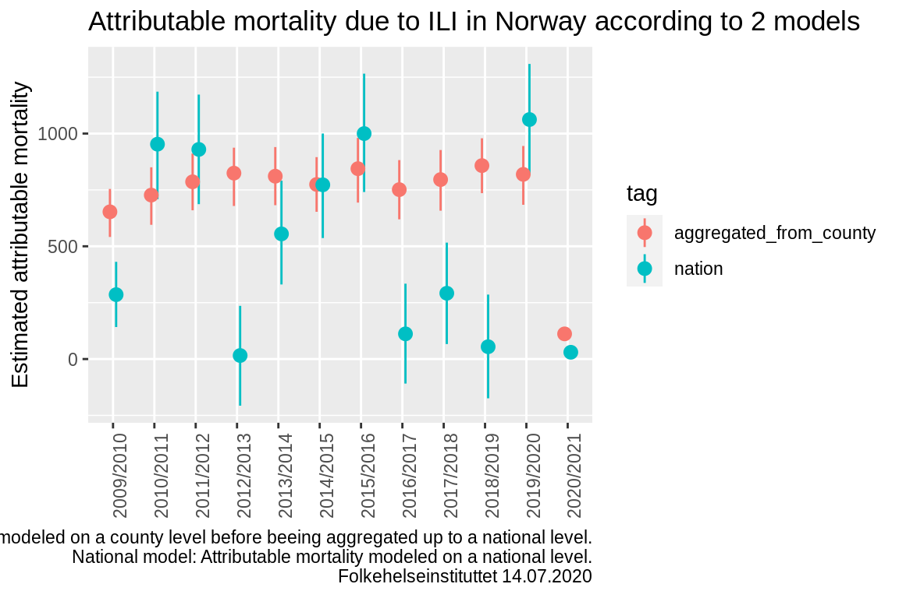
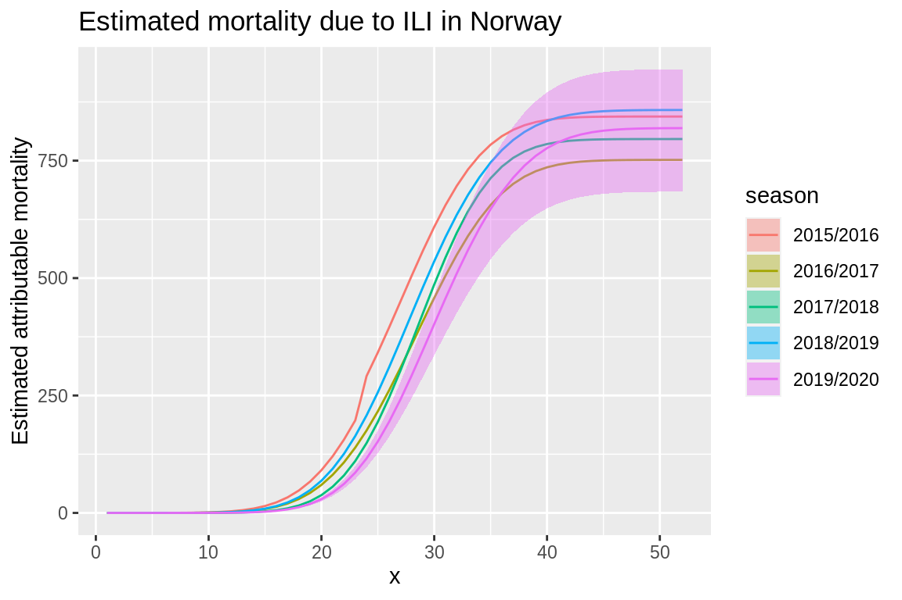
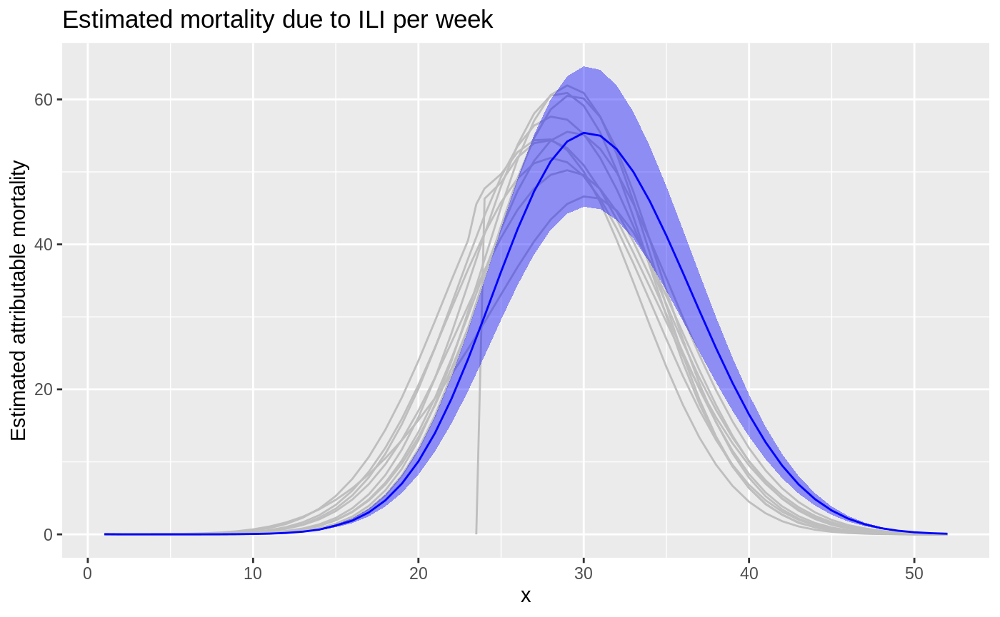
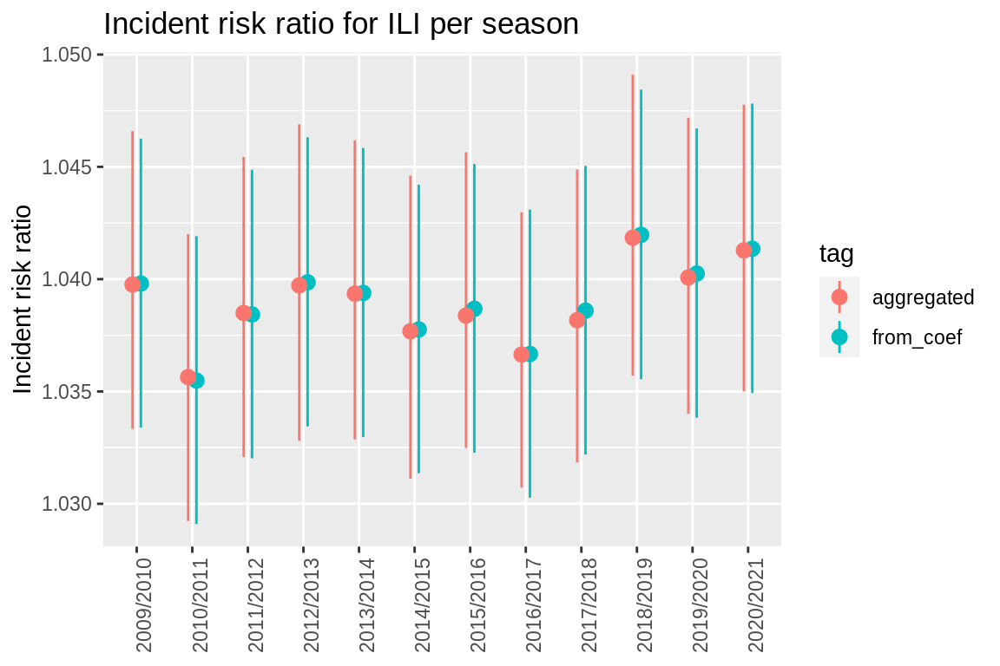

intro.Rmdlibrary(attrib) #> PACKAGE: attrib #> Version: 2020.07.28 at 06:05
Attrib provides a way of estimating what the mortality would have been if some given exposures are set to a referance value. By using simulations from the posterior distribution of all coefficiants one gets the opportunity to easily aggregate over time and locations and still be able to optain credible intevals of the desired percentages.
This example will go throug how to use fit_attrib to fit the data, how to use est_attrib to estimate the mortality given exposures and referance values and some examples of usages of the resulting dataset.
We will use the datasets fake_data_county and fake_data_nation. Fake_data_county consists of fake date of mortalities for all counties of Norway on a weekly basis from 2010 untill 2020. The dataset consists of the followig features:
Fake_data_nation consists of the same features but contains national information.
data_fake_county <- attrib::data_fake_county data_fake_nation <- attrib::data_fake_nation head(data_fake_county, 5) #> location_code week season year yrwk x pop pr100_ili #> 1: county03 1 2009/2010 2010 2010-01 24 693494 1.9011202 #> 2: county03 1 2010/2011 2011 2011-01 24 693494 0.9246802 #> 3: county03 1 2011/2012 2012 2012-01 24 693494 1.1543753 #> 4: county03 1 2012/2013 2013 2013-01 24 693494 1.3947382 #> 5: county03 1 2013/2014 2014 2014-01 24 693494 1.7962545 #> pr100_ili_lag_1 temperature temperature_high deaths #> 1: 1.8916383 2.39975858 0 108 #> 2: 0.7129761 1.90199543 0 104 #> 3: 0.9264079 -6.82610667 0 107 #> 4: 1.1649833 -4.28041946 0 117 #> 5: 1.6253183 0.07310006 0 113
In this example we will look at the exposures pr100_ili_lag_1 and temperature_high and calculate the attributable mortalities due to these exposures.
We want to estimate the attributable mortality due to ILI and heatwaves. Attrib lets us fit models with both fixed and random effect and offsets using linear mixed models. To do so the glmer function from lme4 package is used. This means we must specify which are the offsets, the fixed effects and the random effects. We must also spesify the response. In our case we will model the response deaths as a function of:
#response response <- "deaths" # fixed effects fixef_county <- " temperature_high + pr100_ili_lag_1 + sin(2 * pi * (week - 1) / 52) + cos(2 * pi * (week - 1) / 52)" #random effects ranef_county <- "(1|location_code) + (pr100_ili_lag_1|season)" #offset offset_county <- "log(pop)"
Now we fit the model using fit_attrib.
fit_county <- fit_attrib(data_fake_county, response = response, fixef = fixef_county, ranef = ranef_county, offset = offset_county)
This results in the following fit.
fit_county #> Generalized linear mixed model fit by maximum likelihood (Laplace #> Approximation) [glmerMod] #> Family: poisson ( log ) #> Formula: deaths ~ temperature_high + pr100_ili_lag_1 + sin(2 * pi * (week - #> 1)/52) + cos(2 * pi * (week - 1)/52) + offset(log(pop)) + #> (1 | location_code) + (pr100_ili_lag_1 | season) #> Data: data #> AIC BIC logLik deviance df.resid #> 44427.85 44488.60 -22204.92 44409.85 6305 #> Random effects: #> Groups Name Std.Dev. Corr #> season (Intercept) 0.003392 #> pr100_ili_lag_1 0.003634 -0.89 #> location_code (Intercept) 0.000000 #> Number of obs: 6314, groups: season, 12; location_code, 11 #> Fixed Effects: #> (Intercept) temperature_high #> -8.80487 0.08337 #> pr100_ili_lag_1 sin(2 * pi * (week - 1)/52) #> 0.03828 0.01821 #> cos(2 * pi * (week - 1)/52) #> 0.06821 #> convergence code 0; 0 optimizer warnings; 1 lme4 warnings
Note that fit has the added attributes offset, saving the offset name, and fit_fix, the coefficients of the linear model fitted on only the fixed effects. These are needed by est_attrib later on to create the dataset containing only the fixed effects.
We estimate the same as before But on a national level, meaning we remove the random effect (1|location_code) sinse we only have one location code. This gives the following features:
# take in the fixed effects response = "deaths" fixef_nation <- "temperature_high + pr100_ili_lag_1 + sin(2 * pi * (week - 1) / 52) + cos(2 * pi * (week - 1) / 52)" #take in the random effects ranef_nation <- "(pr100_ili_lag_1|season)" # take in the offset offset_nation <- "log(pop)"
fit_nation <- fit_attrib(data_fake_nation, response = response, fixef = fixef_nation, ranef = ranef_nation, offset = offset_nation)
The sim function can be used to generate simulations for all the rows in our data. It first generater 500 simulations from the posterior distribution of the coefficients from out fit before applying these coefficiants on our dataset generating 500 simululations og expected mortality for each line. This is quite generic. Hence if the goal is to compute attributable mortalities or incident risk ratios we use est_attrib as shown below.
sim_data <- sim(fit_nation, data_fake_nation) #> | | | 0% | |======================================================================| 100%
head(sim_data[id_row == 1], 5) #> location_code week season year yrwk x pop pr100_ili #> 1: norway 1 2009/2010 2010 2010-01 24 5367580 1.929324 #> 2: norway 1 2009/2010 2010 2010-01 24 5367580 1.929324 #> 3: norway 1 2009/2010 2010 2010-01 24 5367580 1.929324 #> 4: norway 1 2009/2010 2010 2010-01 24 5367580 1.929324 #> 5: norway 1 2009/2010 2010 2010-01 24 5367580 1.929324 #> pr100_ili_lag_1 temperature temperature_high deaths id_row sim_id #> 1: 1.919701 -3.913114 0 942 1 1 #> 2: 1.919701 -3.913114 0 942 1 2 #> 3: 1.919701 -3.913114 0 942 1 3 #> 4: 1.919701 -3.913114 0 942 1 4 #> 5: 1.919701 -3.913114 0 942 1 5 #> expected_mort #> 1: 903.9820 #> 2: 924.9666 #> 3: 943.2720 #> 4: 881.7076 #> 5: 922.0911
We can see that we now have multiple expected mortalities for the same dataline. This is due to the coefficiant simmulations.
To generate simulations for each observation and estimate the mortality given the referance values of the exposures we use attribs est_attrib. We need to give the fit, the dataset and the exposures with referance values. Est_attrib will then using the sim function from the arm pachage to generate simulations of the underlying posterior distribution before using this to compute the estimated mortalities for each simulation.
exposures <- list( "temperature_high" = 0, "pr100_ili_lag_1" = 0)
est_attrib_sim_county <- attrib::est_attrib(fit_county,
data_fake_county,
exposures = exposures)
#>
|
| | 0%
|
|=================================== | 50%
|
|======================================================================| 100%
est_attrib_sim_nation <- attrib::est_attrib(fit_nation,
data_fake_nation,
exposures = exposures )
#>
|
| | 0%
|
|======================================================================| 100%head(est_attrib_sim_county, 5) #> location_code week season year yrwk x pop pr100_ili #> 1: county03 1 2009/2010 2010 2010-01 24 693494 1.9011202 #> 2: county03 1 2010/2011 2011 2011-01 24 693494 0.9246802 #> 3: county03 1 2011/2012 2012 2012-01 24 693494 1.1543753 #> 4: county03 1 2012/2013 2013 2013-01 24 693494 1.3947382 #> 5: county03 1 2013/2014 2014 2014-01 24 693494 1.7962545 #> pr100_ili_lag_1 temperature temperature_high deaths id sim_id #> 1: 1.8916383 2.39975858 0 108 1 1 #> 2: 0.7129761 1.90199543 0 104 2 1 #> 3: 0.9264079 -6.82610667 0 107 3 1 #> 4: 1.1649833 -4.28041946 0 117 4 1 #> 5: 1.6253183 0.07310006 0 113 5 1 #> exp_mort_observed exp_mort_temperature_high=0 exp_mort_pr100_ili_lag_1=0 #> 1: 119.4935 119.4935 110.3565 #> 2: 113.8407 113.8407 111.0956 #> 3: 115.5584 115.5584 111.5230 #> 4: 116.2892 116.2892 110.8214 #> 5: 118.2408 118.2408 110.3658
Now we can see in the above dataset that the colums id, sim_id, exp_mort_observed, exp_mort_temperature_high=0, exp_mort_pr100_ili_lag_1=0 are added to the previous set of colums. For each row in the original dataset we now have 500 rows, one for each of the simulations done by est_attrib. In each row we see the estimate of the number of mortalities given a refereance value for exp_mort_temperature_high and exp_mort_pr100_ili_lag_1.
To make the dataprocessing easier later we convert the dataset from wide to long form and collapse the estimated mortalities
est_attrib_county_long<-data.table::melt.data.table(est_attrib_sim_county, id.vars = c("location_code", "season", "x", "week", "id", "sim_id", "deaths", "exp_mort_observed"), measure.vars = c("exp_mort_temperature_high=0", "exp_mort_pr100_ili_lag_1=0")) data.table::setnames(est_attrib_county_long, "variable", "attr") head(est_attrib_county_long, 5) #> location_code season x week id sim_id deaths exp_mort_observed #> 1: county03 2009/2010 24 1 1 1 108 119.4935 #> 2: county03 2010/2011 24 1 2 1 104 113.8407 #> 3: county03 2011/2012 24 1 3 1 107 115.5584 #> 4: county03 2012/2013 24 1 4 1 117 116.2892 #> 5: county03 2013/2014 24 1 5 1 113 118.2408 #> attr value #> 1: exp_mort_temperature_high=0 119.4935 #> 2: exp_mort_temperature_high=0 113.8407 #> 3: exp_mort_temperature_high=0 115.5584 #> 4: exp_mort_temperature_high=0 116.2892 #> 5: exp_mort_temperature_high=0 118.2408
We can see that the columns exp_mort_temperature_high=0, exp_mort_pr100_ili_lag_1=0 are now collapsed into the new column attr and value with attr discribing which exposure we have and value giving the corresponding referance value.
est_attrib_nation_long<-data.table::melt.data.table(est_attrib_sim_nation, id.vars = c("location_code", "season", "x", "week", "id", "sim_id", "deaths", "exp_mort_observed"), measure.vars = c("exp_mort_temperature_high=0", "exp_mort_pr100_ili_lag_1=0")) data.table::setnames(est_attrib_nation_long, "variable", "attr")
Sinse we now have two datasets, one on a countylevel and one on a national level, to compare them some aggregations is needed.
To aggregate from the the current dataset to a national dataset with seasonal data for est_attrib_county_long, the county dataset, we sums exp_mort_observed, value and deaths for all counties and weeks per season. Afterwards we calculate the expected attributable mortality, exp_attr, by substracting value (the estimated number of mortalities given the referance value of the exposure) from the exp_mort_observed and the incident risk ration, exp_irr, by deviding exp_mort_observed by value. To be able to separate this dataset from the other we add a tag.
aggregated_county_to_nation <- est_attrib_county_long[,.( exp_mort_observed = sum(exp_mort_observed), value = sum(value), deaths = sum(deaths) ), keyby = .(season, attr, sim_id)] # Add exp_attr, exp_irr and a tag. aggregated_county_to_nation[, exp_attr:= (exp_mort_observed - value)] aggregated_county_to_nation[, exp_irr:= (exp_mort_observed/value)] aggregated_county_to_nation[, tag := "aggregated_from_county"] head(aggregated_county_to_nation, 5) #> season attr sim_id exp_mort_observed value #> 1: 2009/2010 exp_mort_temperature_high=0 1 25063.61 24864.64 #> 2: 2009/2010 exp_mort_temperature_high=0 2 25394.56 25202.38 #> 3: 2009/2010 exp_mort_temperature_high=0 3 25169.28 24967.10 #> 4: 2009/2010 exp_mort_temperature_high=0 4 25113.88 24914.13 #> 5: 2009/2010 exp_mort_temperature_high=0 5 25182.17 24988.85 #> deaths exp_attr exp_irr tag #> 1: 25481 198.9697 1.008002 aggregated_from_county #> 2: 25481 192.1882 1.007626 aggregated_from_county #> 3: 25481 202.1771 1.008098 aggregated_from_county #> 4: 25481 199.7528 1.008018 aggregated_from_county #> 5: 25481 193.3168 1.007736 aggregated_from_county
We can see that we no longer have the colums location_code, week and x sinse the data is now aggregated to a national level on a seasonal basis.
For the national model we sum the same feathures but only for all weeks per season and create exp_attr and exp_irr in the same way as above.
aggregated_nation <- est_attrib_nation_long[, .( exp_mort_observed = sum(exp_mort_observed), value = sum(value), deaths = sum(deaths) ), keyby = .(season, attr, sim_id)] aggregated_nation[, exp_attr:= (exp_mort_observed - value)] aggregated_nation[, exp_irr:= (exp_mort_observed/value)] aggregated_nation[, tag:= "nation"] head(aggregated_nation, 5) #> season attr sim_id exp_mort_observed value #> 1: 2009/2010 exp_mort_temperature_high=0 1 24768.31 24710.38 #> 2: 2009/2010 exp_mort_temperature_high=0 2 25474.31 25413.91 #> 3: 2009/2010 exp_mort_temperature_high=0 3 24675.88 24613.49 #> 4: 2009/2010 exp_mort_temperature_high=0 4 24068.41 24010.57 #> 5: 2009/2010 exp_mort_temperature_high=0 5 24714.86 24651.84 #> deaths exp_attr exp_irr tag #> 1: 24846 57.92520 1.002344 nation #> 2: 24846 60.40291 1.002377 nation #> 3: 24846 62.38773 1.002535 nation #> 4: 24846 57.83819 1.002409 nation #> 5: 24846 63.01947 1.002556 nation
Again we kan see that the data does no longer contain weekly information but is aggregated to a seasonal basis.
For simplicity we rbindlist the two datasets together.
The next thing to do is to aggregate away the simulations. The benefits of having the simulations is the posibility it gives to efficiently compute al desireable quantiles. For this example we will ue the .05, .5 and .95 quantiles.
# Quantile functins q05 <- function(x){ return(quantile(x, 0.05)) } q95 <- function(x){ return(quantile(x, 0.95)) }
We compute the quantiles for exp_attr and exp_irr in the following way.
col_names <- colnames(data_national) data.table::setkeyv(data_national, col_names[!col_names %in% c("exp_attr", "exp_irr", "sim_id", "exp_mort_observed", "value", "deaths")]) aggregated_sim_seasonal_data_national<- data_national[, unlist(recursive = FALSE, lapply(.(median = median, q05 = q05, q95 = q95), function(f) lapply(.SD, f) )), by = eval(data.table::key(data_national)), .SDcols = c("exp_attr", "exp_irr")] head(aggregated_sim_seasonal_data_national,5) #> season attr tag median.exp_attr #> 1: 2009/2010 exp_mort_temperature_high=0 aggregated_from_county 199.96456 #> 2: 2009/2010 exp_mort_temperature_high=0 nation 59.76135 #> 3: 2009/2010 exp_mort_pr100_ili_lag_1=0 aggregated_from_county 657.03001 #> 4: 2009/2010 exp_mort_pr100_ili_lag_1=0 nation 280.50216 #> 5: 2010/2011 exp_mort_temperature_high=0 aggregated_from_county 482.87878 #> median.exp_irr q05.exp_attr q05.exp_irr q95.exp_attr q95.exp_irr #> 1: 1.007999 189.52015 1.007593 210.8823 1.008424 #> 2: 1.002413 55.42205 1.002251 63.7861 1.002564 #> 3: 1.026715 542.27985 1.021921 767.3054 1.031369 #> 4: 1.011473 125.21106 1.005055 436.2021 1.017787 #> 5: 1.011290 457.56250 1.010712 509.2631 1.011889
We can now see that we have confidance intervals and estimates for both the attributable deaths and the incident risk ratio for all exposures.
To be able to compare the two models we make a pointrange plot using ggplot2.
q <- ggplot(aggregated_sim_seasonal_data_national[attr == "exp_mort_pr100_ili_lag_1=0"], aes(x = season, y = median.exp_attr, group = tag, color = tag)) q <- q + geom_pointrange(aes(x = season, y = median.exp_attr, ymin = q05.exp_attr, ymax = q95.exp_attr), position = position_dodge(width = 0.3)) q <- q + ggtitle("Attributable mortality due to ILI in Norway according to 2 models") q <- q + scale_y_continuous("Estimated attributable mortality") q <- q + theme(axis.text.x = element_text(angle = 90),axis.title.x=element_blank()) q <- q + labs(caption = glue::glue(" Aggregated county model: Attributable mortality modeled on a county level before beeing aggregated up to a national level.\n National model: Attributable mortality modeled on a national level.\n Folkehelseinstituttet 14.07.2020")) q

As a contrast to what we did in the section about comparing the national data to data aggregated from county to national level, we now want to keep the information on a weekly basis.
Hence the aggregation is done in the same way as before with the exeption of including x and week in the keyby funciton.
aggregated_county_to_nation <- est_attrib_county_long[, .( exp_mort_observed = sum(exp_mort_observed), value = sum(value), deaths = sum(deaths) ), keyby = .(season, x, week, attr, sim_id)] aggregated_county_to_nation[, exp_attr:= (exp_mort_observed - value)] aggregated_county_to_nation[, exp_irr:= (exp_mort_observed/value)] head(aggregated_county_to_nation,5) #> season x week attr sim_id exp_mort_observed #> 1: 2009/2010 23.5 53 exp_mort_temperature_high=0 1 854.1494 #> 2: 2009/2010 23.5 53 exp_mort_temperature_high=0 2 871.5726 #> 3: 2009/2010 23.5 53 exp_mort_temperature_high=0 3 859.5299 #> 4: 2009/2010 23.5 53 exp_mort_temperature_high=0 4 860.1416 #> 5: 2009/2010 23.5 53 exp_mort_temperature_high=0 5 851.4509 #> value deaths exp_attr exp_irr #> 1: 854.1494 840 0 1 #> 2: 871.5726 840 0 1 #> 3: 859.5299 840 0 1 #> 4: 860.1416 840 0 1 #> 5: 851.4509 840 0 1
We observe that the location_code is aggregated away but we still have both x and week
Again we compute the quantiles.
col_names <- colnames(aggregated_county_to_nation) data.table::setkeyv(aggregated_county_to_nation, col_names[!col_names %in% c("exp_attr", "exp_irr","sim_id", "exposures", "exp_mort_observed", "value")]) aggregated_county_to_nation_weekly <- aggregated_county_to_nation[, unlist(recursive = FALSE, lapply(.(median = median, q05 = q05, q95 = q95), function(f) lapply(.SD, f) )), by=eval(data.table::key(aggregated_county_to_nation)), .SDcols = c("exp_attr", "exp_irr")]
To be able to visualise the attributable deaths cumulativ we add this feature to the dataset using the cumsum function.
aggregated_county_to_nation_weekly[, cumsum := cumsum(median.exp_attr), by = .( attr, season)] aggregated_county_to_nation_weekly[, cumsum_q05 := cumsum(q05.exp_attr), by = .( attr, season)] aggregated_county_to_nation_weekly[, cumsum_q95 := cumsum(q95.exp_attr), by = .( attr, season)] head(aggregated_county_to_nation_weekly, 5) #> season x week attr deaths median.exp_attr #> 1: 2009/2010 23.5 53 exp_mort_temperature_high=0 840 0.00000 #> 2: 2009/2010 23.5 53 exp_mort_pr100_ili_lag_1=0 840 0.00000 #> 3: 2009/2010 24.0 1 exp_mort_temperature_high=0 897 0.00000 #> 4: 2009/2010 24.0 1 exp_mort_pr100_ili_lag_1=0 897 46.30156 #> 5: 2009/2010 25.0 2 exp_mort_temperature_high=0 861 0.00000 #> median.exp_irr q05.exp_attr q05.exp_irr q95.exp_attr q95.exp_irr cumsum #> 1: 1.000000 0.00000 1.000000 0.00000 1.000000 0.00000 #> 2: 1.000000 0.00000 1.000000 0.00000 1.000000 0.00000 #> 3: 1.000000 0.00000 1.000000 0.00000 1.000000 0.00000 #> 4: 1.053669 38.13629 1.043961 54.08895 1.063161 46.30156 #> 5: 1.000000 0.00000 1.000000 0.00000 1.000000 0.00000 #> cumsum_q05 cumsum_q95 #> 1: 0.00000 0.00000 #> 2: 0.00000 0.00000 #> 3: 0.00000 0.00000 #> 4: 38.13629 54.08895 #> 5: 0.00000 0.00000
We now have the quantiles and median as before as well as the cumulativ values on a seasonal basis.
We use ggplot2s geom_line and geom_ribbon to nicely visualize the estimates of attributable mortality for the diferent seasons and adding the ninty percent confidance interval to the last season.
library(ggplot2) q <-ggplot(data = aggregated_county_to_nation_weekly[season %in% c("2015/2016", "2016/2017", "2017/2018", "2018/2019","2019/2020") & attr == "exp_mort_pr100_ili_lag_1=0"], aes(x = x, y = cumsum, group = season, color = season, fill = season)) q <- q + geom_line() q <- q + geom_ribbon(data = aggregated_county_to_nation_weekly[season %in% c("2019/2020") & attr == "exp_mort_pr100_ili_lag_1=0"], aes(ymin = cumsum_q05, ymax = cumsum_q95), alpha = 0.4, colour = NA) q <- q + scale_y_continuous("Estimated attributable mortality") q <- q + ggtitle("Estimated mortality due to ILI in Norway") q

q <- ggplot(data = aggregated_county_to_nation_weekly[attr == "exp_mort_pr100_ili_lag_1=0"], aes(x = x, y = cumsum, group = season)) q <- q + geom_line(data = aggregated_county_to_nation_weekly[season != "2019/2020" &attr == "exp_mort_pr100_ili_lag_1=0"], aes(x = x, y = median.exp_attr, group = season), color = "grey") q <- q + geom_line(data = aggregated_county_to_nation_weekly[season == "2019/2020" &attr == "exp_mort_pr100_ili_lag_1=0"], aes(x = x, y = median.exp_attr, group = season), color = "blue") q <- q + geom_ribbon(data = aggregated_county_to_nation_weekly[season == "2019/2020" &attr == "exp_mort_pr100_ili_lag_1=0"], aes(x = x, ymin = q05.exp_attr, ymax = q95.exp_attr), fill = "blue", alpha=0.4) q <- q + scale_y_continuous("Estimated attributable mortality") q <- q + ggtitle("Estimated mortality due to ILI per week") q

Untill now we have focused moslty on attributable mortalities. Now we will take a look at how to cumpute the incident rate ratio for pr100_ili_lag_1. Do do this we will use the fit made by fit_attrib on the county dataset but we will change the values for pr100_ili_lag_1 to 1.
data_fake_county_irr <- data.table::copy(data_fake_county) data_fake_county_irr[, pr100_ili_lag_1 := 1] head(data_fake_county_irr, 5) #> location_code week season year yrwk x pop pr100_ili #> 1: county03 1 2009/2010 2010 2010-01 24 693494 1.9011202 #> 2: county03 1 2010/2011 2011 2011-01 24 693494 0.9246802 #> 3: county03 1 2011/2012 2012 2012-01 24 693494 1.1543753 #> 4: county03 1 2012/2013 2013 2013-01 24 693494 1.3947382 #> 5: county03 1 2013/2014 2014 2014-01 24 693494 1.7962545 #> pr100_ili_lag_1 temperature temperature_high deaths #> 1: 1 2.39975858 0 108 #> 2: 1 1.90199543 0 104 #> 3: 1 -6.82610667 0 107 #> 4: 1 -4.28041946 0 117 #> 5: 1 0.07310006 0 113
Then we can set the referance value to zero and hence optain the risk ratio for the given exposures.
exposures_irr = c(pr100_ili_lag_1 = 0)
Now we use est_attrib to create the simmulations.
est_attrib_sim_county_irr <- attrib::est_attrib(fit_county,
data_fake_county_irr,
exposures = exposures_irr)
#>
|
| | 0%
|
|=================================== | 50%
|
|======================================================================| 100%
head(est_attrib_sim_county_irr, 5)
#> location_code week season year yrwk x pop pr100_ili
#> 1: county03 1 2009/2010 2010 2010-01 24 693494 1.9011202
#> 2: county03 1 2010/2011 2011 2011-01 24 693494 0.9246802
#> 3: county03 1 2011/2012 2012 2012-01 24 693494 1.1543753
#> 4: county03 1 2012/2013 2013 2013-01 24 693494 1.3947382
#> 5: county03 1 2013/2014 2014 2014-01 24 693494 1.7962545
#> pr100_ili_lag_1 temperature temperature_high deaths id sim_id
#> 1: 1 2.39975858 0 108 1 1
#> 2: 1 1.90199543 0 104 2 1
#> 3: 1 -6.82610667 0 107 3 1
#> 4: 1 -4.28041946 0 117 4 1
#> 5: 1 0.07310006 0 113 5 1
#> exp_mort_observed exp_mort_pr100_ili_lag_1=0
#> 1: 115.7356 110.0756
#> 2: 116.0123 111.7927
#> 3: 115.1126 110.0150
#> 4: 115.4902 109.8399
#> 5: 115.1866 110.0492We see we have obtained values for the referance of the exposure in the same way as before. The difference now is that we changed the dataset before running est_attrib meaning the exp_mort_observed will now deviate a from the true number of deaths and be the expected number of deaths given pr100_ili_lag_1 equall to 1.
The next step is as before to aggregate from a county, weekly to a national seasonal dataset as well ass adding the values for the incident risk ratio to the column exp_irr.
aggregated_county_to_nation_sim_irr <- est_attrib_sim_county_irr[, .( exp_mort_observed = sum(exp_mort_observed), "exp_mort_pr100_ili_lag_1=0"= sum(`exp_mort_pr100_ili_lag_1=0`), deaths = sum(deaths) ), keyby = .(season, sim_id)]
aggregated_county_to_nation_sim_irr[, exp_irr:= (exp_mort_observed/`exp_mort_pr100_ili_lag_1=0` )] head(aggregated_county_to_nation_sim_irr,5) #> season sim_id exp_mort_observed exp_mort_pr100_ili_lag_1=0 deaths #> 1: 2009/2010 1 25545.40 24296.10 25481 #> 2: 2009/2010 2 25487.67 24554.40 25481 #> 3: 2009/2010 3 25571.36 24409.18 25481 #> 4: 2009/2010 4 25566.21 24654.72 25481 #> 5: 2009/2010 5 25431.35 24482.46 25481 #> exp_irr #> 1: 1.051419 #> 2: 1.038008 #> 3: 1.047612 #> 4: 1.036970 #> 5: 1.038758
Now we can compute the quantiles.
col_names <- colnames(aggregated_county_to_nation_sim_irr) data.table::setkeyv(aggregated_county_to_nation_sim_irr, col_names[!col_names %in% c( "exp_irr","sim_id", "exp_mort_observed", "exp_mort_pr100_ili_lag_1=0")]) aggregated_county_to_nation_irr <- aggregated_county_to_nation_sim_irr[, unlist(recursive = FALSE, lapply(.(median = median, q05 = q05, q95 = q95), function(f) lapply(.SD, f) )), by=eval(data.table::key(aggregated_county_to_nation_sim_irr)), .SDcols = c("exp_irr")] aggregated_county_to_nation_irr[, tag := "aggregated"] aggregated_county_to_nation_irr #> season deaths median.exp_irr q05.exp_irr q95.exp_irr tag #> 1: 2009/2010 25481 1.039450 1.032826 1.046513 aggregated #> 2: 2010/2011 43371 1.034971 1.028498 1.042000 aggregated #> 3: 2011/2012 43130 1.038001 1.031101 1.045449 aggregated #> 4: 2012/2013 43305 1.039336 1.032972 1.047079 aggregated #> 5: 2013/2014 43341 1.039158 1.032479 1.045997 aggregated #> 6: 2014/2015 42989 1.037555 1.030981 1.043938 aggregated #> 7: 2015/2016 43885 1.038428 1.031396 1.045836 aggregated #> 8: 2016/2017 43384 1.036402 1.029025 1.043798 aggregated #> 9: 2017/2018 43715 1.038237 1.031261 1.045065 aggregated #> 10: 2018/2019 42892 1.041372 1.034857 1.048919 aggregated #> 11: 2019/2020 43108 1.040028 1.033017 1.047433 aggregated #> 12: 2020/2021 18877 1.040982 1.034481 1.048179 aggregated
Now we compare the resulting values for irr with the ones obtained by coef(fit_county)$season and the 90 credible interval computed manually using the standard deviation given by summary(fit_county) for pr100_ili_lag_1.
coef_fit_county <- data.table::as.data.table(coef(fit_county)$season) col_names_coef <- c("pr100_ili_lag_1") coef_irr_data <- coef_fit_county[, ..col_names_coef] coef_irr_data[, irr := exp(pr100_ili_lag_1)] coef_irr_data[, q05 := exp(pr100_ili_lag_1 - 1.645 *0.003761)] # 0.003761 is the standard deviation from coef(fit_county) coef_irr_data[, q95 := exp(pr100_ili_lag_1 + 1.645 *0.003761)] coef_irr_data[, tag := "from_coef"] coef_irr_data #> pr100_ili_lag_1 irr q05 q95 tag #> 1: 0.03903384 1.039806 1.033392 1.046259 from_coef #> 2: 0.03486914 1.035484 1.029098 1.041910 from_coef #> 3: 0.03770888 1.038429 1.032024 1.044873 from_coef #> 4: 0.03908609 1.039860 1.033446 1.046313 from_coef #> 5: 0.03863077 1.039387 1.032976 1.045837 from_coef #> 6: 0.03706589 1.037761 1.031361 1.044202 from_coef #> 7: 0.03795133 1.038681 1.032274 1.045127 from_coef #> 8: 0.03601079 1.036667 1.030273 1.043101 from_coef #> 9: 0.03787166 1.038598 1.032192 1.045043 from_coef #> 10: 0.04111602 1.041973 1.035546 1.048439 from_coef #> 11: 0.03946076 1.040250 1.033834 1.046705 from_coef #> 12: 0.04052015 1.041352 1.034929 1.047815 from_coef
Add the correct seasons to the data.
coef_irr_data <- cbind(season = aggregated_county_to_nation_irr$season, coef_irr_data) coef_irr_data #> season pr100_ili_lag_1 irr q05 q95 tag #> 1: 2009/2010 0.03903384 1.039806 1.033392 1.046259 from_coef #> 2: 2010/2011 0.03486914 1.035484 1.029098 1.041910 from_coef #> 3: 2011/2012 0.03770888 1.038429 1.032024 1.044873 from_coef #> 4: 2012/2013 0.03908609 1.039860 1.033446 1.046313 from_coef #> 5: 2013/2014 0.03863077 1.039387 1.032976 1.045837 from_coef #> 6: 2014/2015 0.03706589 1.037761 1.031361 1.044202 from_coef #> 7: 2015/2016 0.03795133 1.038681 1.032274 1.045127 from_coef #> 8: 2016/2017 0.03601079 1.036667 1.030273 1.043101 from_coef #> 9: 2017/2018 0.03787166 1.038598 1.032192 1.045043 from_coef #> 10: 2018/2019 0.04111602 1.041973 1.035546 1.048439 from_coef #> 11: 2019/2020 0.03946076 1.040250 1.033834 1.046705 from_coef #> 12: 2020/2021 0.04052015 1.041352 1.034929 1.047815 from_coef
Rbindlist the two datasets together.
total_data_irr <- data.table::rbindlist(list(coef_irr_data, aggregated_county_to_nation_irr), use.names = FALSE) total_data_irr[, pr100_ili_lag_1 := NULL] total_data_irr #> season irr q05 q95 tag #> 1: 2009/2010 1.039806 1.033392 1.046259 from_coef #> 2: 2010/2011 1.035484 1.029098 1.041910 from_coef #> 3: 2011/2012 1.038429 1.032024 1.044873 from_coef #> 4: 2012/2013 1.039860 1.033446 1.046313 from_coef #> 5: 2013/2014 1.039387 1.032976 1.045837 from_coef #> 6: 2014/2015 1.037761 1.031361 1.044202 from_coef #> 7: 2015/2016 1.038681 1.032274 1.045127 from_coef #> 8: 2016/2017 1.036667 1.030273 1.043101 from_coef #> 9: 2017/2018 1.038598 1.032192 1.045043 from_coef #> 10: 2018/2019 1.041973 1.035546 1.048439 from_coef #> 11: 2019/2020 1.040250 1.033834 1.046705 from_coef #> 12: 2020/2021 1.041352 1.034929 1.047815 from_coef #> 13: 2009/2010 1.039450 1.032826 1.046513 aggregated #> 14: 2010/2011 1.034971 1.028498 1.042000 aggregated #> 15: 2011/2012 1.038001 1.031101 1.045449 aggregated #> 16: 2012/2013 1.039336 1.032972 1.047079 aggregated #> 17: 2013/2014 1.039158 1.032479 1.045997 aggregated #> 18: 2014/2015 1.037555 1.030981 1.043938 aggregated #> 19: 2015/2016 1.038428 1.031396 1.045836 aggregated #> 20: 2016/2017 1.036402 1.029025 1.043798 aggregated #> 21: 2017/2018 1.038237 1.031261 1.045065 aggregated #> 22: 2018/2019 1.041372 1.034857 1.048919 aggregated #> 23: 2019/2020 1.040028 1.033017 1.047433 aggregated #> 24: 2020/2021 1.040982 1.034481 1.048179 aggregated #> season irr q05 q95 tag
q <- ggplot(data = total_data_irr, aes(x = season, group = tag, color = tag)) q <- q + geom_pointrange(aes(y = irr, ymin = q05, ymax = q95), position = position_dodge(width = 0.3)) q <- q + theme(axis.text.x = element_text(angle = 90),axis.title.x=element_blank()) q <- q + labs(y = "Incident risk ratio") q <- q + ggtitle("Incident risk ratio for ILI per season") q

As we can see these intervals are very similar.
The benefit of the aggregated aproach is that this prosess will be equally easy no matter the complexity of what we want to compute the irr for. We do not have ot take the variance covariance matrix in to account at any stage or manually compute credible intervals.